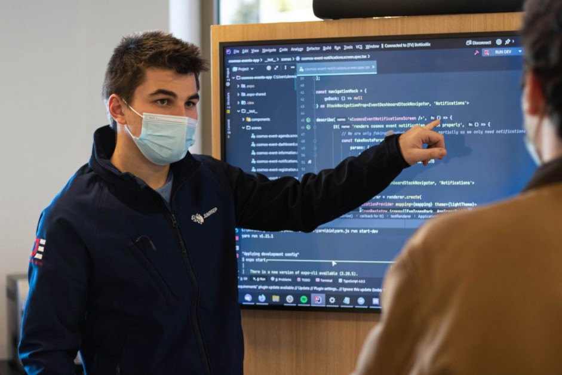

Découvrez le Doctorat en Informatique
Le But au doctorat
En tant qu'étudiant, vous vous demandez : que faire après un but ? Où mes études vont-elles me mener ? Mais que faire !
Avez-vous pensé à faire un doctorat ?
Si vous avez toujours été passionné par l'innovation, que vous aimez coder, et que vous aspirez à ouvrir de nouvelles perspectives dans le domaine de l’informatique, à mener des recherches scientifiques et à devenir reconnu dans ce monde, alors le doctorat est fait pour vous !
L'objectif d'un doctorat
L’objectif d’un doctorat est de réaliser et de coopérer à l’élaboration de nouvelles théories, techniques et principes dans le domaine du doctorat choisi de manière fondamentale de manière scientifique, permettant le développement de nouvelles technologies et de la civilisation. Cette formation requiert d’accomplir des tâches de haut niveau en conception et en gestion de systèmes informatiques, vous permettant ainsi de devenir chercheur ou chercheuse de renom dans le domaine informatique.
Les prérequis
Le doctorat, d'une durée de trois ans après l'obtention du diplôme national de master ou sur la base de la reconnaissance d'un niveau équivalent, offre la possibilité d'obtenir, après soutenance d'une thèse, le prestigieux grade de docteur. Il représente le plus haut diplôme de l'enseignement supérieur.
La direction de recherche doit être confirmée avant l'admission :
Avant votre admission au programme, vous devez trouver un professeur qui acceptera de superviser vos travaux de recherche. Cette étape est cruciale et obligatoire pour l'admission.
Direction de recherche à confirmer avant l'admission :
Vous devez trouver avant votre admission au programme un professeur qui acceptera de superviser vos travaux de recherche. Cette étape est obligatoire pour l'admission.
Les liens du BUT en informatique et les doctorats
Pendant un but informatique, vous avez diverses possibilités pour poursuivre vos études, que ce soit en Licence, en école d’Ingénieur, ou même en Master. (Voir page bac+5)
Après avoir réussi votre master ou terminé le cursus d’une école d’ingénieur, vous avez la possibilité de poursuivre un doctorat.
En tant qu'étudiant du but informatique, vous avez deux axes possibles. C'est génial, n'est-ce pas !

Les Domaines d'Expertises
En master,nous proposons différentes spécialisations, mais pour celui en informatique, voici quelques domaines :
- Intelligence artificielle
- Optimisation
- Interface personne-machine
- Robotique intelligente
- Bio-informatique
- Systèmes intelligents
- Traitement du langage
- Perception intelligente
- Apprentissage machine
- Forage de données
- Sécurité informatique
- Traitement de données massives
- Compression de données
- Réseaux mobiles
Comment s'inscrire en doctorat
L'inscription en première année de doctorat est prononcée par le chef d'établissement sur proposition du directeur de l'école doctorale, après avis du directeur de thèse et du directeur de l'unité ou de l'équipe de recherche sur la qualité du projet et les conditions de sa réalisation.
Pour être inscrit en doctorat, le candidat doit être titulaire d'un diplôme conférant le grade de master. Si cette condition de diplôme n'est pas remplie, le chef d'établissement peut, par dérogation et sur proposition du conseil de l'école doctorale, inscrire en doctorat des personnes ayant effectué des études d'un niveau équivalent ou bénéficiant de la validation des acquis de l'expérience prévue à l'article L. 613-5 du code de l'éducation.
La politique d'admission de chaque école doctorale est disponible sur les pages Internet de l'école.
Consultez l’annuaire des écoles doctorales pour avoir une vision complète des champs disciplinaires vers lesquels sont tournées les écoles doctorales.